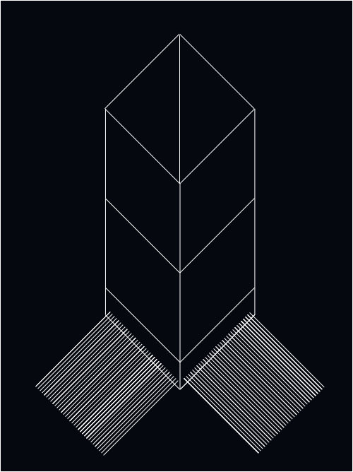
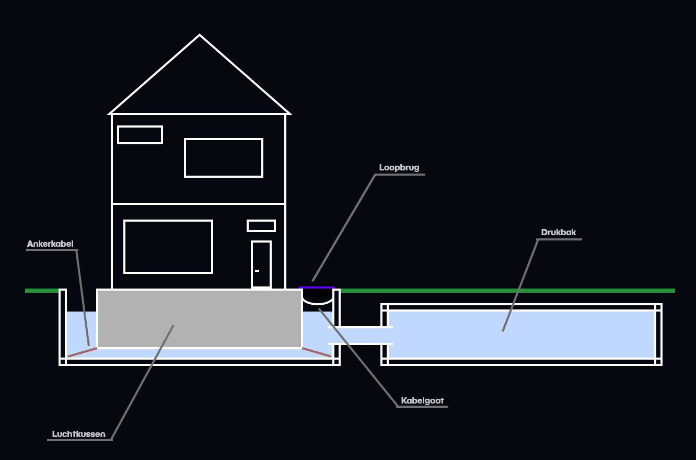

Thijs van der Klein
Huis op kabels
Een manier om een huis te beschermen tegen aardbevingstrillingen zou kunnen zijn door gebruik te maken van een touwconstructie met katrollen en touwen. Doormiddel van gewichten ontstaat er een constante spanning op de touwen, die ervoor zorgt dat het
object altijd in een evenwicht blijft hangen. Stel het evenwicht wordt verstoord, door een trilling bijvoorbeeld, dan stelt zich meteen een nieuwe evenwicht in, het gewicht aan de ene kant zal iets omhoog gaan terwijl de andere kant
iets omlaag zou gaan. Hierdoor zou het object in het midden stil blijven hangen. Om beide golven (x en z) op te kunnen vangen zitten de touwen over elkaar, waardoor beide golven worden opgevangen. En het object, als het goed is, stil
zal blijven te hangen in het midden.
Het huis zit vast aan de kabels doormiddel van ringen en knopen. Zodat het huis niet van de touwen afrolt, ook zitten er ringen bij de gewichten zodat de gewichten niet teveel uit balans raken. De gewichten kunnen worden afgesteld doormiddel van een computer
die berekend hoeveel kracht het omlaag moet trekken. Zodat ook bij uitbreidingen van het huis, het centrum in evenwicht blijft.

Afbeelding 1
Concept versie: Huis op kabels
Maar, ook hier zitten nadelen aan. Zoals door wrijving zullen de touwen niet heel soepel bewegen, dit kan zoveel mogelijk worden verholpen door het gebruik van katrollen, maar de weerstands- en wrijvingskrachten zullen blijven bestaan. Daarnaast moet
het gehele huis worden omgebouwd om te kunnen worden geplaatst op touwen, het heeft namelijk 0 verbinding met de grond, waardoor alle leidingen ook flexibel genoeg moeten zijn om mee te kunnen bewegen met de touwen. Verder is er een
enorm gat nodig om alle touwen en gewichten in kwijt te kunnen, stel je kiest voor een computer gestuurde oplossing, ben je alsnog enorm veel energie kwijt om die constant te laten berekenen, hoeveel kracht er moet worden uitgeoefend
op de touwen.
Ook, moeten de touwen van enorme omvang zijn om het gewicht van een totaal huis (gemiddeld 135000kg) te dragen, bovendien zorgt dit ervoor dat er weinig uitbreidingsmogelijkheden zijn, zoals een feestje of een dakkapel zou al meteen voor ernstige problemen
kunnen zorgen als de constructie daar niet op berekend is. Daarnaast is het ook onderhoudsgevoelig, omdat er veel bewegende delen in de constructie zitten ben je altijd wel bezig om dingen te smeren of om touwen te vervangen. Stel
je kiest voor stalen kabels, lever je al veel voordelen in. Vooral omdat deze een stuk stugger zijn, en hierdoor minder beweegbaar zijn, wat resulteert in meer krachtwerking, oftewel meer slijtage. Bovendien, ben je enorm kwetsbaar
voor storingen. Stel de computer maakt een fout en trekt je gehele huis schuin, dan is je inboedel ook kapot. Al met al, leuk idee, niet haalbaar en al helemaal niet op grote schaal.
Water
Een ander middel, dat rijkelijk voor handen is, zoals water zou ook kunnen helpen in de strijd tegen aardbevingsschade. Het object zal hierbij in een bak met water drijven, waarbij er rondom het huis genoeg ruimte is om te kunnen bewegen. Het huis moet
een grote kelder, of luchtruimte, bevatten onder het huis, dat werkt als de ponton van het object. Doormiddel van een losliggende kabel wordt het huis op z’n plaats gehouden, elk op een hoek van het huis, zodat het bij golfslag niet
uitbreekt en tegen de muren aan knalt. De trillingen worden door de bak doorgegeven aan het water, het water zal hierdoor golven, maar doordat het huis erop drijft, en zwaarder gewicht heeft dan de golfkracht (ideale situatie), zal
het huis niet al te veel moeten bewegen.
In tegenstelling tot de andere oplossingen, is water in overvloede verkrijgbaar en zou dat geen probleem moeten vormen. Doordat je gebruik maakt van natuurwetten, heb je nooit last van eventuele storingen met computers of andere systemen. Verder, is het
ook minder onderhoudsintensief, zolang je de goede materialen gebruikt. Beton in water is meestal geen goede oplossing, maar met een speciale coating, of penetrerende beton sealer kan je het beton waterdicht maken (betonwaterdichtmaken,
2015), waardoor je voor de nabije toekomst geen zorgen er meer over hebt.
Toch, zitten hier ook diverse nadelen aan. Namelijk om gebruik te maken van het evenwicht, moet het water gelijk zijn tussen twee bakken, hierdoor ben je al veel materiaal kwijt om de gehele opstelling te maken. Via een ondergrondse buis worden de twee
bakken aan elkaar gemaakt, door druk kan je er dan voor zorgen dat het huis niet naar de grond zakt. Deze opstelling vergt veel ruimte, omdat er enorm veel water nodig is om een totaal huis te laten drijven. Daarnaast moet de bak ook
nog enorm diep zijn, om ruimte te maken voor de luchtkamer onder het huis, want zonder de luchtkamer zou het huis meteen naar de bodem afzinken. Daarnaast, bestaat altijd nog het risico dat de bak lek zou raken ten tijde van een aardbeving,
waardoor je bescherming ook weg valt.

Afbeelding 2
Concept versie: Huis op water
Stel je maakt het geheel van een meebewegend rubber, dan voorkom je al veel problemen, maar krijg je een nieuw probleem. Hoe ga je het rubber onderhouden? Elke keer het water erin en eruit halen is ook niet realistisch. Komen we op het volgende punt,
om zo'n bak te vullen heb je grote hoeveelheden water nodig, dat haal je niet zomaar eventjes ergens vandaan. Vooral in de zomer als er al een watertekort is, is het idioot om een x aantal huizen te moeten bijvullen omdat het water
er verdampt. Ook zorgt het stilstaande water, ten tijde van geen aardbeving, voor de nodige overlast. Muggen en andere insecten vinden stilstaand water fantastisch, en dan hebben we het nog geen eens gehad over de geuroverlast dat
zou ontstaan.